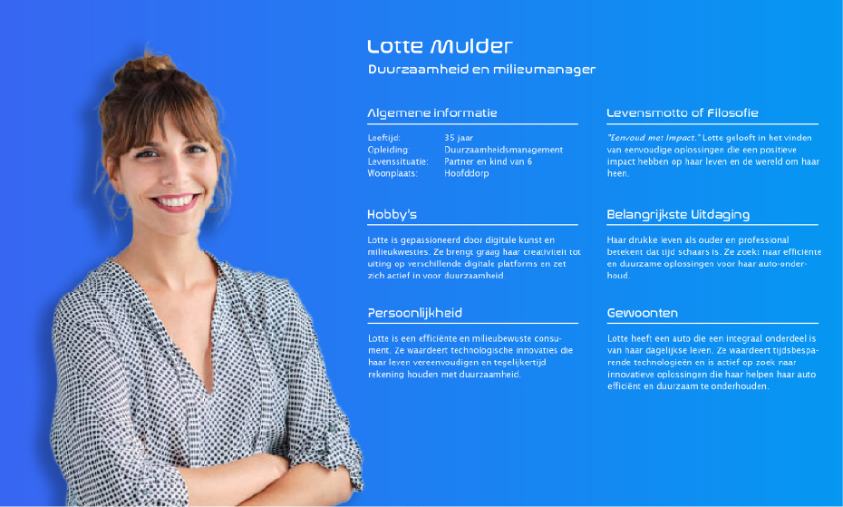

Project 2: De Loogman App van de toekomst
Tijdens mijn tussentijdse gesprek kreeg ik van de directie een nieuwe opdracht. Ik was op dat moment bezig met een prototype van hoe de Loogman App er uit zou kunnen zien. De directie gaf aan dat ze graag wilden weten hoe een eventuele app er over 10 jaar uit zou kunnen zien, aangezien ze nu al plannen maken voor de komende 10 jaar. Ze vroegen mij om dit te onderzoeken vanuit mijn expertise als UX-designer en dit vervolgens te presenteren aan het managementteam.
Ik was meteen enthousiast, omdat ik tot nu toe beperkt was tot het denken binnen de kaders van het werken aan de app. Ik moest continu rekening houden met allemaal factoren. Maar voor deze opdracht, die pas over 10 jaar is, kon ik dat volledig loslaten. Hierdoor was dit een ontzettend leuk project om aan te werken.
Onderzoek opzetten
Mijn onderzoek begon eigenlijk op de zelfde manier als mijn eerste onderzoek begon. Het eerste wat ik deed was de design challenge opstellen en hier deelvragen bij te bedenken.
Design challenge
Hoe zou een Loogman App of een ander digitaal product er over 10 jaar uit kunnen zien, rekening houdend met de trends en voortgang van technieken in die tijd?
Deelvragen
- Welke potentiële doelgroep wil Loogman over 10 jaar aantrekken?
- Hoe ziet de doelgroep van Loogman er over 10 jaar uit?
- Hoe leeft de doelgroep van over 10 jaar op dit moment?
- Zullen de mensen die over 10 jaar de doelgroep zijn, veranderingen in gedrag vertonen naarmate ze een nieuw stadium in hun leven bereiken?
- Welke technieken zijn er over 10 jaar beschikbaar?
- Wat zijn de voorspellingen over de trends van de toekomst met betrekking tot de auto?
- Wat zijn de voorspellingen over de trends van de toekomst met betrekking tot UX/UI design?
Onderzoek naar autorijden over 10 jaar
Om de toekomst van een app gebaseerd op auto's te voorspellen, leek het mij belangrijk om inzicht te krijgen in hoe auto's over 10 jaar in het straatbeeld te zien zullen zijn. Daarom heb ik nieuwsartikelen over autorijden in de toekomst opgezocht en gekeken naar beschikbare interessante data bij het Centraal Bureau voor de Statistiek. Deze data gaf aan dat over 10 jaar het straatbeeld nog steeds gedomineerd zal worden door brandstofauto's, maar dat er wel steeds meer elektrische auto's bij zullen komen. Het aantal brandstofauto's blijft nagenoeg gelijk.
Ik heb ook gekeken naar het autobezit in Nederland en het aantal mensen met een rijbewijs. Dit leek mij interessant om mogelijk een doelgroep voor dit project te bepalen en dat is gelukt. Er is een interessante groep mensen onder de 30 jaar geïdentificeerd, waarvan verwacht wordt dat velen van hen over 10 jaar een auto zullen hebben.
Onderzoek naar de doelgroep
Ik heb besloten om mij te richten op de groep onder de 30 jaar, omdat zij over 10 jaar de markt betreden voor Loogman. Deze groep behoort tot generatie Z. Om de doelgroep beter te begrijpen, ben ik op zoek gegaan naar de kenmerken en eigenschappen van generatie Z en heb ik gekeken naar de overeenkomsten en verschillen met andere doelgroepen. Ik heb dit onderzocht door meerdere artikelen online te lezen.
Na het in kaart brengen van deze informatie, heb ik een persona opgesteld die de doelgroep representeert. De persona heet Lotte Mulder en is een weergave van hoe Lotte er over 10 jaar uit zal zien, terwijl ze vandaag in 2024 nog altijd 25 jaar is.

Onderzoek naar UX/UI design in de toekomst
Om het toekomstbeeld compleet te maken, ontbrak er nog één onderdeel: de technologie van over 10 jaar. Dit was het lastigst om te onderzoeken, omdat er steeds nieuwe trends opkomen die je niet had verwacht te veranderen. Daarom heb ik gekeken naar de trends van 2024 op het gebied van UX-design. Hiervoor heb ik informatie gehaald uit bronnen zoals UX Magazine.
Vervolgens heb ik opgezocht hoe deze trends zich naar verwachting zullen ontwikkelen in de komende 10 jaar. Mijn bevindingen waren dat “AI” steeds meer een leidende rol zal spelen in apps, zowel op de voorgrond, zoals bijvoorbeeld een ChatGPT, als op de achtergrond. Dit betekent dat je apparaat veel data over jou verzamelt en op basis daarvan de beste ervaring voor jou kan realiseren. Dit wordt eigenlijk nu al toegepast bij bijvoorbeeld YouTube en TikTok door hun algoritme, maar in de toekomst zul je dit ook zien in apps die zich vormen naar jouw gebruik. Verder wordt verwacht dat er steeds meer verschillende apparaten zullen verschijnen. Daarnaast zullen we steeds meer gebruik gaan maken van VUI, omdat dit natuurlijker zal worden, zeker met de integratie van AI. Bij CMD heb ik geleerd dat gebruikers de makkelijkste vorm van interactie kiezen, en in de toekomst zal er dus nog meer met je stem worden bediend. Het visuele aspect van UX/UI heb ik ook onderzocht voor 2024. Echter, hier lag mijn focus niet op bij dit project, omdat deze trends in de komende 10 jaar zeker zullen veranderen.
Gebruikersbehoeften
Mijn onderzoek zat er op en het was tijd voor het leukste gedeelte namelijk conceptualiseren, maar om met een goed concept te komen was het belangrijk om eerst op een rijtje te hebben welke behoeftes de gebruiker zou hebben. Hiervoor heb ik mijn persona er weer eens bij gepakt en gekeken wat Lotte zou willen zien in haar Loogman App Dit heb ik gedaan door een lijst te maken van de gebruikersbehoeftes. Hier zijn een paar van de gebruikersbehoeftes die ik opgesteld had:
- Efficiëntie: Gebruikers hebben behoefte aan oplossingen die tijd besparen en dagelijkse taken efficiënter maken.
- Duurzaamheid: Gebruikers streven naar een duurzamere levensstijl en zoeken naar mogelijkheden om milieubewuste keuzes te maken, ook in mobiliteit en autogebruik.
- Technologische Innovatie: Gebruikers waarderen geavanceerde technologieën en digitale oplossingen die hun leven vereenvoudigen en verbeteren.
- Milieu bewustheid: Gebruikers zijn betrokken bij milieukwesties en zoeken naar tools en informatie om hun ecologische voetafdruk te verminderen.
- Gemak in Auto-onderhoud: Autobezitters zoeken naar eenvoudige en effectieve manieren om voor hun voertuigen te zorgen en zijn geïnteresseerd in technologische hulpmiddelen voor auto-onderhoud.
- Persoonlijke Relevantie: Gebruikers verlangen naar gepersonaliseerde ervaringen en oplossingen die aansluiten bij hun specifieke behoeften en levensstijl.
Ideeontwikkeling
Voor de ideeontwikkeling heb ik een onconventionele aanpak gekozen door gebruik te maken van AI in plaats van traditionele brainstormmethodes zoals crazy 8 en brainwriting. In een artikel van UX Magazine las ik over het integreren van AI in het ontwerpproces, wat mij inspireerde om ChatGPT te gebruiken voor dit toekomstgerichte project.
Na het delen van de projectcontext, onderzoeksbevindingen en gebruikersbehoeftes met de AI, heb ik verschillende prompts gebruikt om concepten te genereren. Door de suggesties te verfijnen en te combineren met mijn eigen ideeën, kwam ik tot een uitgewerkt concept.
Deze methode was niet alleen efficiënter gezien de beperkte tijd, maar gaf me ook een waardevolle sparringpartner aangezien ik de enige UX/UI specialist was bij Loogman.